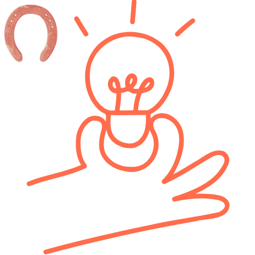
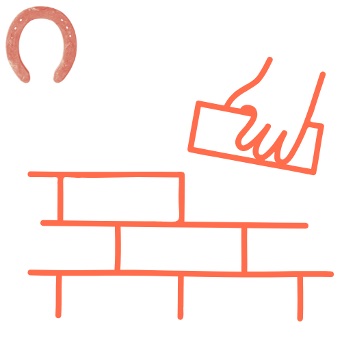
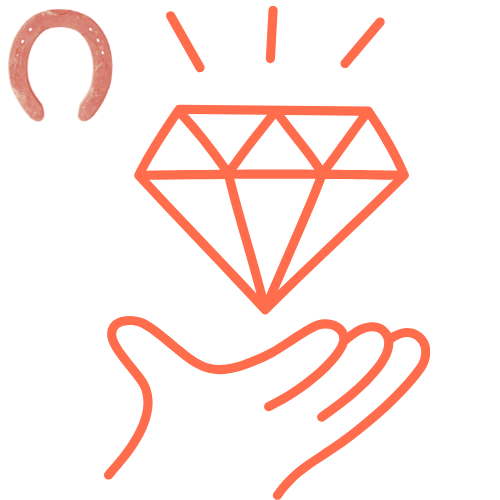
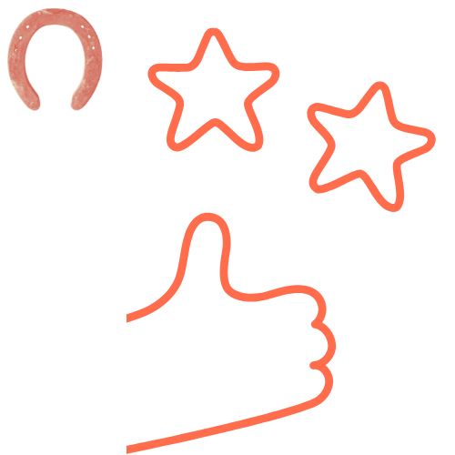

LA HERRADURA es un proyecto educativo y como tal se ha de estructurar en una serie de fases donde el alumnado, siguiendo las indicaciones de sus mentores, planifique todo el proceso. En el siguiente gráfico dinámico se pueden ver las partes en que se compone el proceso de creación de LA HERRADURA y que van desde la reproducción hasta la evaluación final el proyecto.

 PREPRODUCCIÓN - "En busca del guion soñado"
Aquí comienza todo. Como en cualquier película, las ideas se ponen sobre el papel y se construye el guion que dará forma a la historia. Los alumnos se convierten en guionistas y directores de su propio destino: diseñan la sinopsis, crean en storyboard y reparten roles, como si estuvieran formando el reparto y el equipo técnico de una gran producción. Es la fase donde se siembra la semilla, con la ilusión de que cada plano futuro será fruto del esfuerzo compartido.
 PRODUCCIÓN - "Cuando la suerte grita ¡acción!"
Las cámaras empiezan a grabar y la magia ocurre: la herradura pasa de ser un símbolo en el papel a un objeto vivo frente a la lente. El alumnado se transforma en actores, técnicos de sonido, directores de fotografía y protagonistas de su propia aventura. Aquí se aprende que no todo depende de la suerte: la perseverancia, la coordinación y la capacidad de resolver imprevistos son las verdaderas claves para que cada toma llegue al “¡acción!” con éxito.
DIFUSIÓN Y COMUNICACIÓN - "Una historia que merece ser contada"
De las aulas al mundo. Una película no termina cuando se apagan los focos del rodaje. Ahora toca mostrar al mundo lo creado. Los alumnos diseñan carteles, elaboran la canción de cabecera y comparten avances en redes sociales, como si lanzaran un tráiler que invita a soñar. Es el momento de abrir las puertas, de contar la historia de La Herradura más allá del aula, y de demostrar que el esfuerzo también necesita ser compartido y celebrado.
 PRODUCTO FINAL - "La suerte nos acompañó, pero el esfuerzo nos llevó hasta aquí"
Tras el montaje y la edición, el momento de la proyección del cortometraje terminado. La alfombra roja será el momento deseado por los actores y actrices y donde la comunidad educativa se reúne para ver cómo la suerte y el esfuerzo se han mezclado en cada escena. Este evento está previsto para el curso 2025-2026 así que se incluirá en el proyecto en cuando tenga lugar. Mientras tanto, podemos ver cómo ha quedado la película. ¡Pasen y vean!
 EVALUACIÓN DEL PROYECTO - "Caen los créditos, empieza la reflexión"
Como en cualquier festival de cine, llega el momento de valorar el recorrido. El alumnado realiza su propia crítica: analiza, comenta y reflexiona sobre lo que funcionó y lo que puede mejorar. El profesorado, como jurado, aporta su visión sobre el impacto del proyecto. Al final, no importa si hubo errores o aciertos, lo importante es la experiencia de haber vivido el rodaje de la vida, donde la suerte acompaña, pero es el esfuerzo lo que garantiza que la película continúe.